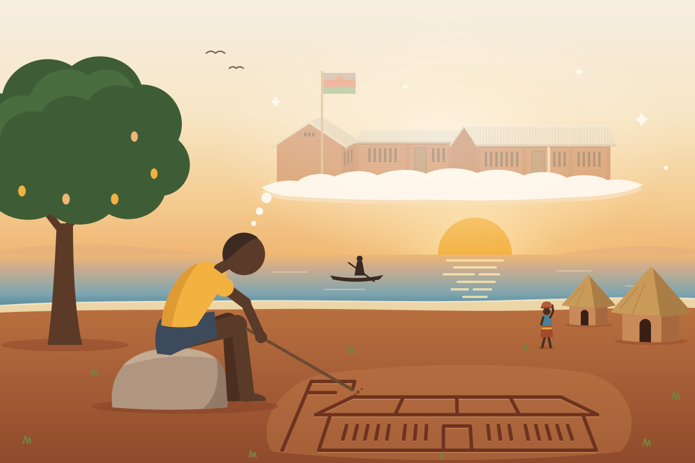
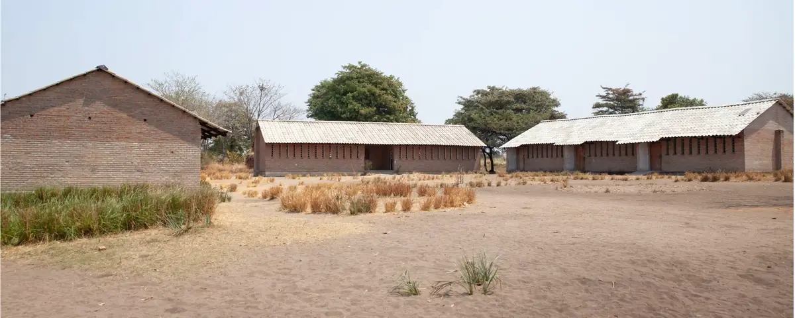
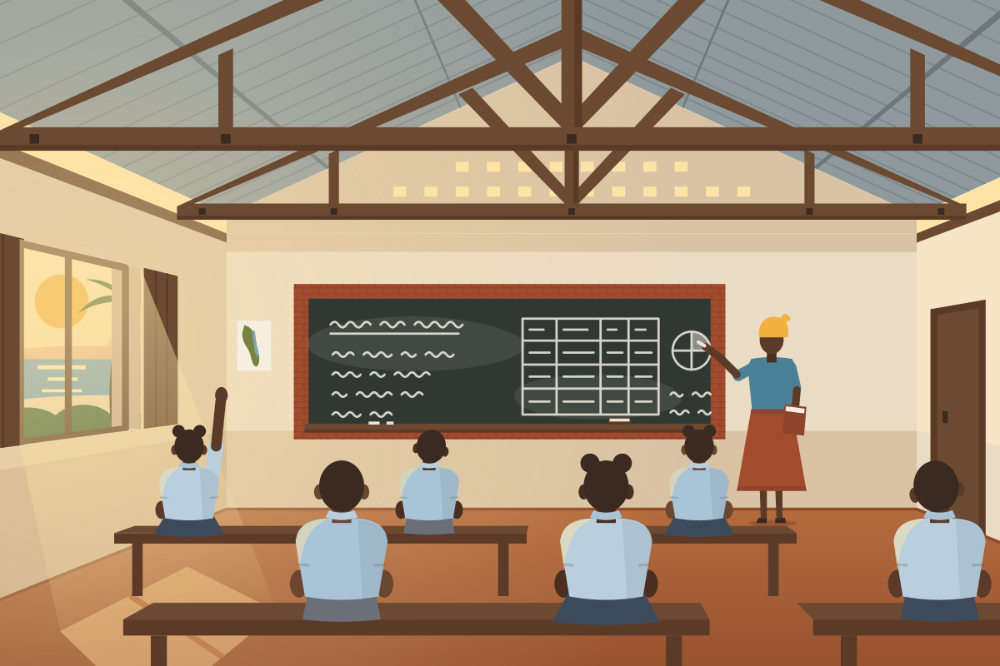
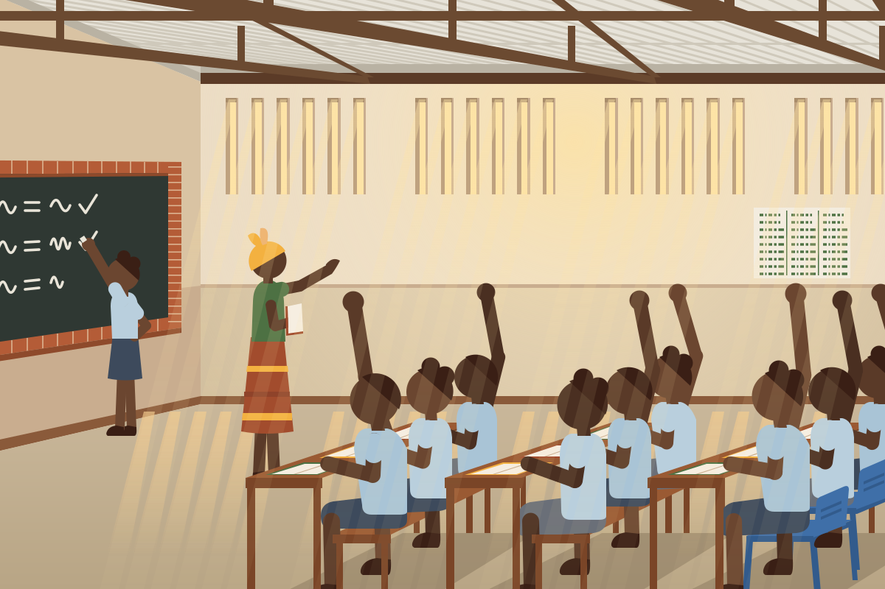
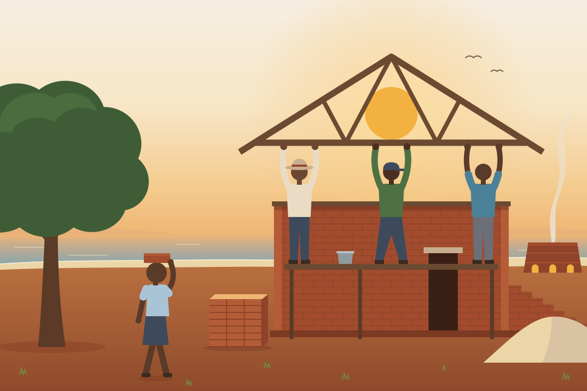

In the classroom
Lessons follow the Malawi curriculum, from reading and writing in Chichewa and English to maths, science and agriculture.
Nkhotakota · Malawi
Sukulu ya Chankhasi
A community school by Lake Malawi, from Standard 1 to Form 4, built brick by brick with the help of friends from near and far.
About the school
Chankhasi Private School grew from a community primary school in Nkhandwe Village, a short walk from the shore of Lake Malawi and about 15 km south of Nkhotakota town in central Malawi. It now has a secondary school too.
It began because the young children here had nowhere close by to learn. The nearest primary school was more than 6 km away, and in the rainy season the rivers on the way were too dangerous for them to cross.
After talks with local leaders the village was given a plot of land, and the first lessons were held in a small church and under the trees. Since building began in 2009 the school has grown one classroom at a time, with the community and friends from near and far all playing their part. Today the primary school has more than 300 pupils and eight teachers.
Our story
Pang’onopang’ono ndi mtolo. Little by little makes a bundle.
Andrew Banda grew up in Nkhandwe Village, near the shore of Lake Malawi. As a boy, he had a big dream: a school close to home. Before Chankhasi, the nearest primary school was more than 6 km away, so many of the village’s young children were not going to school. It was a long walk for small legs, and in the rainy season the rivers were too dangerous for them to cross.
The people of Nkhandwe talked the problem over with local leaders, and the village was given a plot of land for a school. The first building had mud walls and a grass roof. On weekdays it was a school, and at weekends it was an Anglican church. Andrew was part of it from the start.
Little by little, the school grew. A new school committee rebuilt the church in brick. In June 2009 building began on the first classroom, and supporters sponsored its roof trusses one by one. By 2016 there were seven classrooms, 377 pupils and seven teachers, and Andrew was one of those teachers.
The dream kept growing. Chankhasi now has its own secondary school, Canon Hunter Secondary School, so pupils can carry on to Form 4 without leaving the school family. There are boarding houses for girls and boys, a clinic run by Andrew that also serves the whole community, and solar power day and night.
Today, Andrew is the Very Reverend Father Andrew Malovu Banda. He is the Founder and Director of Chankhasi Private Schools, and Dean of the Anglican Diocese of Lake Malawi, at All Saints Cathedral in Nkhotakota. He has said that building a better Malawi is a shared responsibility. Chankhasi shows what that looks like: a school built by many hands, near and far.


After talks with local leaders, the people of Nkhandwe Village are given a plot of land for a school. Its first building, with mud walls and a grass roof, is a school on weekdays and an Anglican church at weekends.
A newly formed school committee rebuilds the church with brick walls and a tiled roof, and employs a teacher, with visitors giving monthly gifts towards the salary. Lessons are held in the church and under the surrounding trees.
The school committee plans the school’s future, and an architect checks the plans before any building starts.
Building begins in June. Supporters sponsor the roof trusses one by one, among them pupils at Morna International College in Ibiza, who raise money with weekly biscuit sales. When the first classroom is finished, the school holds an open day for local leaders, education officials, parents and pupils.
Students from Kingswood School in Bath visit through Open Arms Malawi, helping to raise new school buildings year after year. Kingswood also helps to pay teachers’ salaries.
The school now has seven classrooms, a library, a staff room, a storeroom, separate toilets for boys, girls and staff, and a water tank, with 377 pupils and seven teachers. Andrew Banda is one of the teachers.
Students from Ashville College in Harrogate whitewash and plaster classrooms, paint the blackboards and start building an eco-toilet. The school doors get a coat of bright blue.
Andrew writes for a British website about why girls’ education matters, and how few pupils, especially girls, win a place at a government secondary school. The primary school has 329 pupils.
Canon Hunter Secondary School opens at Nkhandwe. With Chankhasi Primary School it makes up Chankhasi Private Schools, so pupils can go from Standard 1 to Form 4 in one school family.
Students from Lancing College in Sussex help to lay bricks for a new secondary classroom, and teach some of the lessons.
A Lancing College group returns to help build a boarding house for girls at the secondary school. Canon Hunter’s first Form 4 students sit the national MSCE exams.
In July, Father Andrew, Founder and Director of Chankhasi Private Schools and the Smart Village Clinic, gives medical equipment worth about US$25,000 to Nkhotakota District Hospital. A few days earlier, he gave a similar gift to St Anne’s Anglican Hospital.
The girls’ boarding house opens, and boys have a boarding house of their own. In 2025 Kingswood School in Bath reports that its gifts are helping the school to keep building a new dormitory.
Chankhasi Private Schools brings a primary school, a secondary school, boarding houses for girls and boys, a clinic and solar power together in one place. The primary school has more than 300 pupils and eight teachers. In 2026, 78 per cent of Canon Hunter’s Form 4 students passed the MSCE, up from 74 per cent the year before. There is still more to build, led by the Founder and Director, the Very Reverend Father Andrew Malovu Banda, now Dean of the Anglican Diocese of Lake Malawi.
School life
Kuongola mtengo mpoyamba. A tree is straightened while it is young.


Lessons follow the Malawi curriculum, from reading and writing in Chichewa and English to maths, science and agriculture.
The school has its own garden plot for rice, bananas and vegetables, in one of Malawi’s great rice-growing districts.
Football and netball are played with passion, and matches against visiting schools draw a crowd from the whole village.
Chankhasi belongs to the villages around it. Pupils whose families could not afford the small termly fee have paid in bricks instead, carrying a brick a day across the road from the kiln to the school.
Every pupil at Chankhasi between 2008 and 2016 painted a ceramic tile, and the tiles were fixed to the outside of the classrooms as a record of everyone who had their first lessons here.
Friends of Chankhasi
Mutu umodzi susenza denga. One head cannot carry a roof.
Chankhasi has been built by many hands. Some belong to families who live a short walk away; others travelled thousands of miles to lay a few bricks.

How you can help
Tithandizane. Let us help one another.
There is still plenty to do. The best way to help is to get in touch, and we will tell you exactly where your support would go.
So that every class has a room of its own. Classrooms are built truss by truss: in 2016, £420 paid for one roof truss with its roofing, cement and labour, and each sponsor’s name was engraved on their truss.
Eight teachers share more than 300 pupils, so every new teacher makes a real difference.
Textbooks, exercise books, pens and chalk are always needed. In 2016 a new desk cost £40.
Teach a subject or a sport, help pupils read and speak English, and bring fresh energy to the school day. If you would like to volunteer, get in touch.
Visiting school groups have helped to build Chankhasi. We would love to welcome more.
Get in touch to give, or to sponsor a desk or a roof truss, and we will tell you exactly where your gift would go.
Tell your friends, your school, your church or your workplace about Chankhasi, or hold an event to raise money for the school.
Every brick counts.
Get in touchContact
Whether you would like to visit, to teach, to give or simply to find out more, we would love to hear from you.